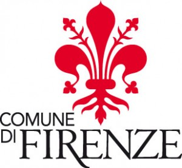

|
|

اهدای زنبق طلایی شهر فلورانس به نسرین ستوده و ماریو بارتولینی، سمبل صداقت و دفاع از حق بیان
جمعه5 فروردین 1390
تغییر برای برابری – اهدای زنبق طلایی شهرفلورانس برای سال 2010 از سوی شورای شهر فلورانس به نسرین ستوده و پدرماریوبارتولینی تصویب شد.
فریده کرملویی از فعالان کمپین در ایتالیا با ارسال اطلاعیه این شورا به تغییر برای برابری گفت:« این جایزه هر دو سال یک بار به دونفر اهدا می شود که کاندیدای سال 2010 نسرین ستوده وپدر بارتولینی هستند»

شورای شهر فلورانس در جلسه اخیر خود در مارس 2011 ، درخواست کمیسیون شورای صلح و همبستگی بین المللی این شهر مبنی بر اهدای زنبق طلایی شهر فلورانس به نسرین ستوده را پذیرفت. بر اساس مصوبات این شورا، زنبق طلایی به افراد یا سازمان هایی اهدا می شود که گام هایی شایسته در پیشبرد و برقراری صلح و دفاع از حقوق بشر برداشته اند و در این راه با آسیب و آزار هم رو به رو بوده اند.
در اطلاعیه شورای شهر فلورانس آمده است: نسرین ستوده وکیل مدافع حقوق بشر درایران است. او مدافع حقوق کودکان است و وکالت کودکان زیر 18 سال را که به مجازات مرگ محکوم شده اند برعهده داشته است. نسرین از مخالفان تبعیض قانونی علیه زنان است و برای برابری حقوق زن و مرد در ایران و علیه قوانین یک طرفه و مردانه مبارزه می کند. نسرین به خاطرهمین فعالیت هایش جایزه حقوق بشر HRI در 2008 دریافت کرد. او اکنون به خاطر فعالیت هایش و به خاطر وکالت و دفاع از همکارش شیرین عبادی به 11 سال زندان محکوم شده است.
پدر ماریو بارتولینی به خاطر 30 سال فعالیت در پرو و حمایت از حقوق بومیان پرویی در برابر سلطه شرکت های چندملیتی به تحریک بومیان منطقه متهم و بارها بازداشت شده است .
شهر فلورانس آنها را سمبل صداقت و دفاع از حق بیان می داند و به همین منظور زنبق طلایی شهر فلورانس را به نسرین ستوده و پدر ماریو بارتولینی تقدیم می کند .
جهان کوشش های نسرین را قدر می داند اما او در سال نو هم از دیدار فرزندانش محروم است
این روزها در میان کسانی که آزادی می شوند، به مرخصی می آیند، اجازه ملاقات با خانواده شان را خود را می یابند خبری از نسرین ستوده نیست. خبری از ملاقات یا مرخصی برای نسرین ستوده نمی شنویم. مهرآوه و نیما همچنان چشم به در دوخته اند تا در سال نو مادر را ببینند. نیما طی 7 ماهی که از بازداشت نسرین می گذرد حتی یک ساعت هم مادرش را ندیده است. این کودکان انگار قرار است هزینه ایستادگی مادری را بپردازند که نه اهل معامله است و نه اهل شکستن . این کودکان اکنون ابزاری شده اند برای رنج چنین مادری. بی آنکه نسبت به خشونتی که به این کودکان روا می دارندتوجهی نشان دهند.
نسرین ستوده همچنان در زندان است. درحالی که هم سلولی هایش آزاد شدند او چند روزی را در انفرادی بسر برد و تا کنون هم اجازه ملاقات حضوری نداشته است. او همچنان در بند 209 است و پس از 7 ماه بازداشت هنوز به بند عمومی منتقل نشده است. هفت ماه هست که جز در داخل سلول حتی برای رفتن به دستشویی چشم بند باید برچشم هایش باشد. بیش از دو ماه هست که حکم او را صادر کرده اند اما بدون تمدید قرار بازداشت و بدون حکم قضایی او را در زندان نگاه داشته اند.
سلول های بدون تختخواب، تعذیه نادرست، انفرادی و فشارروانی طاقت فرسا وضعیتی است که نسرین و بسیاری از دیگر زندانیان در آن گرفتار بوده اند. در حالی که جهان کوشش های نسرین را قدر می داند دادگستران ما مدافع حقوق زنان و بشر را به نام عدالت به بند می کشند.